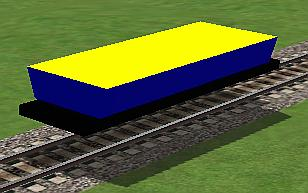

How To Animate An Electric Loco (And Make Parts Move Using The P Key): Section 5
A Side Dump Gondola
by Paul DeVerter
A Port City Car Co. Project Copyright © 2005
SECTION 5A - A Side Dump Gondola
This Side Dump Gondola is somewhat more complex than what we have done heretofore. This Gondola has a hopper or gondola body that moves to the side, and then rotates to about a 45° angle, so as to dump the contents onto the Right of Way. This time we will use only two parts, which are arranged to work somewhat differently. The Main portion is the same as usual. The side dump hopper is made so that it will slide to the side, and then it will rotate and allow the contents to slide or dump onto the right of way. So, we will have a somewhat lower Main part, and then a hopper or gondola body that will move in accordance with instructions from the animation of the P key. This time we have only one animated part, but it will both move linearly and then it will rotate.
And here is what the Side Dump Car looks like, in running position:

This time the parts are a little different, so let's start from scratch. First make a body which we will call Main sort of in the shape of a flat car. I have colored it black and raised it off of the track or Origin. By now you know how to make these adjustments:
Then the next thing we need is a gondola or hopper portion which is also a simple box shape. To make it look more like a gondola you will need to decrease the size of the bottom portion. Below is an image of the textured hopper and an end view of the TSM file. Note that the origin of this part has been moved to the bottom of the hopper. It has also been moved to the side, about where I expect the rotation of the gondola portion to be rotated. I textured it blue on the four sides, yellow on the top, and green on the bottom. This was so I could easily see the various sides of the portion.
Now we need to think about the animation. As usual we first need to attend to some housekeeping, namely make certain that we have properly named the parts, inserted the proper parentage, and used the proper parentage. Press F2 for the frame and make sure you have named it Main. Then move to the hopper body or portion, and again press F2. Now look at the Part Properties window. We need for the Part Name to be one of those utilized by the "P" key, and that means it must be a Train Name beginning with the Pantograph prefix. I have again chosen PantographBottom1. And for this part I have made the Part Parent: Main. These are the only 2 parts for this Object.

Now we need to go to Project Properties and chose Locomotive, Electric, and the number of animation frames, just as we have with the earlier objects. I have chosen 5 Frames for this gondola. Also pick a long and short name for your creation.
Next up is programming in the animation. We have learned that the first frame of animation should be the extended or non-running position of our objects, and the last frame should be the running position. We will want the running position to be with the gondola portion to be flat on the Main frame, so that means that Frame 0 should be the extended position where the gondola body is tilted in dumping position. Select the gondola portion and then push the "Ani" button. Then, using the Move Tool, move the gondola portion to the side so that the portion is beyond the Main, and then use the Rotate Tool to pivot the gondola portion so that it is at about a 45° angle to the Main. This will be the starting position or Frame 0. Once you have it in position push both the Set Motion and the Set Rotation buttons. Now you may move on to the next point where something happens.
Let's move on to Frame 2, and let Frame 1 alone, as it will be automatically interpolated. Move the slider to Frame 2, and rotate the gondola portion as shown. Then push the Set Motion and the Set Rotation buttons once more. Actually, you probably only need to press the Set Rotation button, since nothing is happening to the linear motion.
Indeed you may have been able to omit even programming Frame 2, and simply gone from Frame 0 to Frame 3, because it would all be interpolated. Well, let's move on to Frame 3. Again make the necessary rotation of the gondola portion, this time to the horizontal position. Now press Set Rotation again and also Set Motion, because this is the beginning of the next phase - namely the sliding of the gondola portion from off the side to the center.

Finally move the slider to Frame 4, and then move the gondola portion to the center. Press both the Set Motion and the Set Rotation buttons and we are done with the animation. You probably do not need to press the Set Rotation button, as we are only linearly sliding the gondola portion
OK let's check out the animation. First move the slider back and forth and see if things look pretty good. Then check out the actual animation keys. You will remember that the procedure is to return the slider to the left, or Frame 0, and then get out of the Animation sequence. Make sure the gondola portion is still selected. Next press F2 and then the Animation button at the bottom right. This will bring up the Part Animation window, which will show what we have done, and whether anything has gone bad.
Looking at the Motion Keys we see that Frames 0 through 3 are identical. This is as it should be, since all that is happening in these Frames is rotation.
The only Motion occurs between Frames 3 and 4, when the gondola portion slides over from the edge to the center. Looks good so now look at the Rotation Keys. Here we see rotation taking place from Frames 0 through 3, and none between Frames 3 and 4. Again, this is what we programmed, so it looks fine.
Since we have already textured the two parts, and the animation looks good proceed to Create the Train Simulator Object. The steps are identical to those previously done with the other locomotives in this series except for the Filename. Make sure all the boxes are checked in Processing Options and click Continue. Make a consist using Consist Editor, for your SideDump Electric Locomotive and then head for the Sim and take a look at the finished project.
When you open the Sim, you will see the SideDump moving from the dumping position (Frame 0) to the running position (Frame 4). This is because the default line in the eng file reads:
PantographToggle1 ( 0 1 1 )
which means that the Pantograph is to move to the running position (remember the last item in the brackets is a 1, which tells the SideDump loco to move to the end of the sequence of frames of animation). Now release your brakes, and advance the throttle, and off you will go.
When you get to a convenient location, set the brakes and press the "P" key, and you should see the following sequence of animation.
Lessons Learned
You have now learned how to animate a single part, and have it successively rotate, and then move linearly. And you should be able to add to the number of animation Frames, in order to slow the movements down, and likewise to add more time to either the rotation or the linear motion, as you might desire.
Now it is time to move on to an even more complicated version of the Side Dump Gondola, this time adding a Side Door that opens.